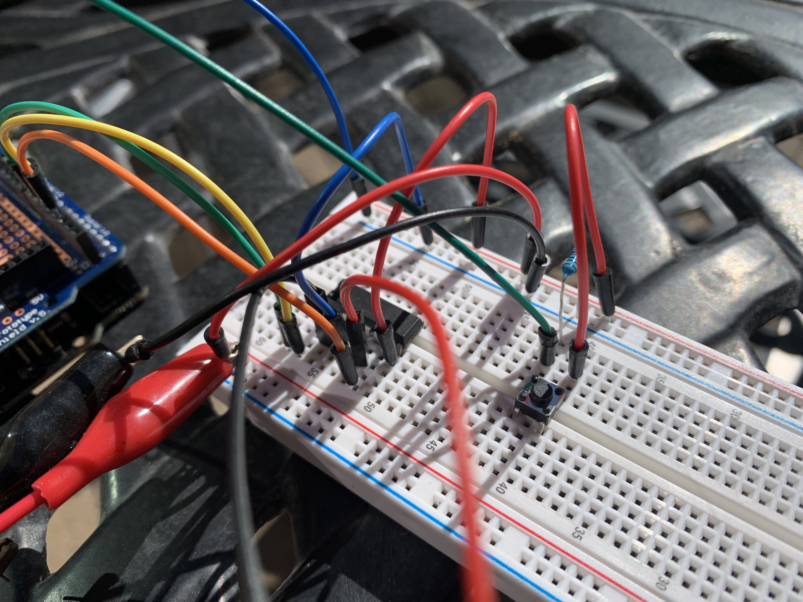
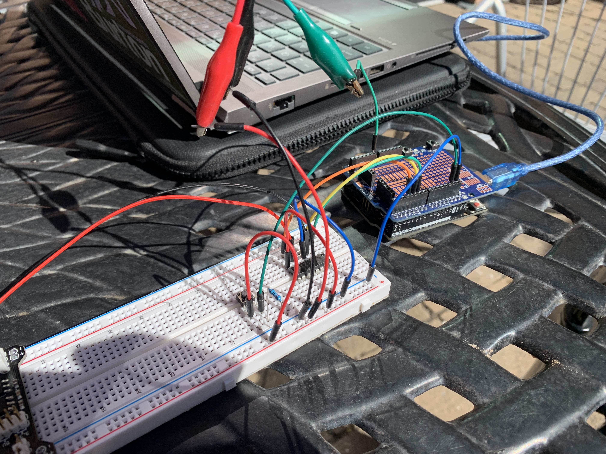
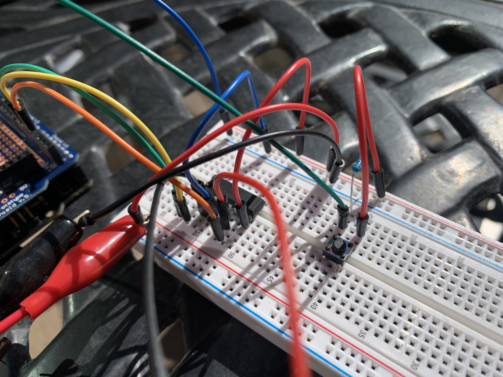
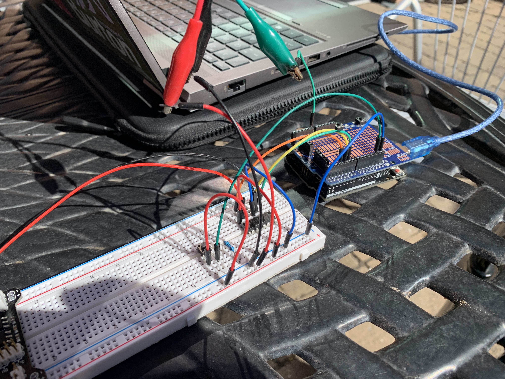

PROCESS:
Initial Steps
Initially I copied the setup DC Motor PDF to make sure I had the H bridge connected properly. Once I got the motor functioning properly I decided to add some of my own flair to the circuit. I thought it was a little boring to make the motor run on the repeating pattern it currently followed and I really wanted to make use of the “enable” pin on the H bridge. This led me to my first modification which was to remove the code that switches the motor direction and connect a potentiometer to control the motor speed. To do this I made the potentiometer send an analog signal to the arduino which maps the inputs to the voltage range of the motor. The arduino then sends the mapped value, via PWM, to the enable pin on the H Bridge which sends a voltage to the motor.
Video of this stage
Final Additions
After I got the potentiometer to control the motor speed I also wanted to try to get a button to toggle the direction of the motor. To do this I created a simple button circuit with a pulldown resistor that could send a signal to the arduino when pressed. I then wrote some arduino code that interpolated the button presses and toggled a “motorDirection” variable whenever the button was pressed. The polarity of the signal sent to the motor is then toggled by an if statement that reads the motorDirection variable.
Images of final circut
 


